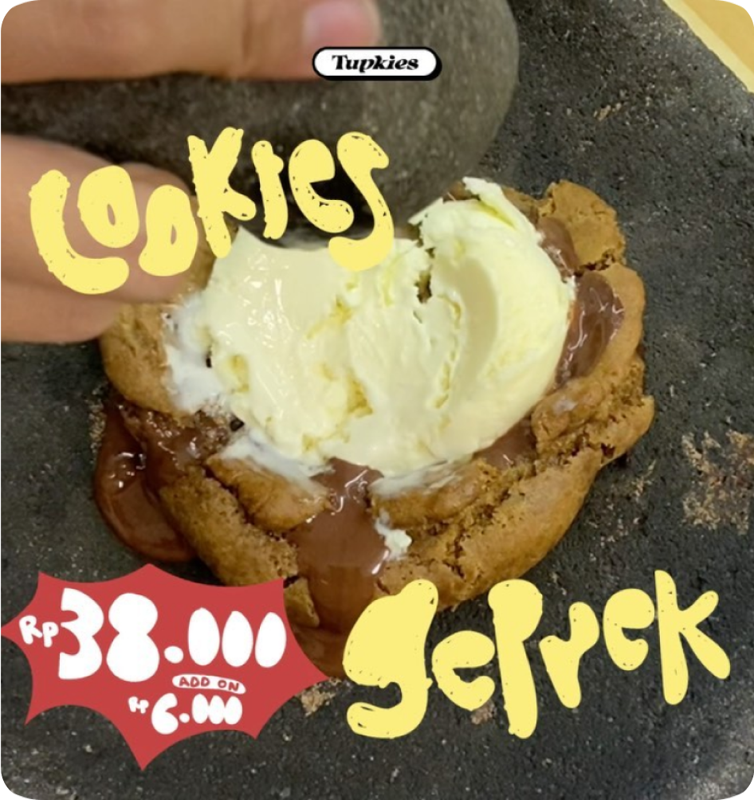

What’s New

Sebagai seorang entrepreneur dengan MBTI ESTP kami terus mencoba untuk memberikan kiamat kecil dalam skena cookies Bandung Akhirnya dari modal berguru dari geprek bebas di @keukenbdg (iya kami tenant di acara yang keren itu) jadilah Cookies Geprek coklat meledag-meledag dibanderol dengan harga Rp38,000 ajah. Lama di dunia kreatif yang fana alias 3 bulan ajah, memang di sini isinya ga jauh2 dari Amati, Tiru, dan Modifikasi. Banyak terima kasih untuk @fudgybro untuk inspirasinya, sebagai bentuk #respect “Cookies Geprek” hanya tersedia di toko sampai @fudgybro buka cabang di Kota Kembang. Ijin mbak/mas, tolong kabarin h-1 minggu biar kami langsung takeout ini dari menu Jadi, ayo dateng ke toko untuk rasain Cookies Geprek auto hauce untuk para gentleman dan ladies yang suka pake nivea bengkoang sebelum jalan-jalan.